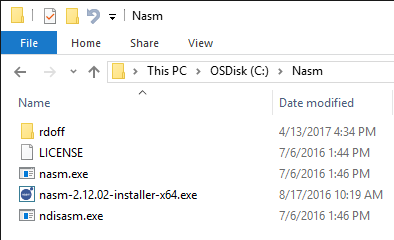
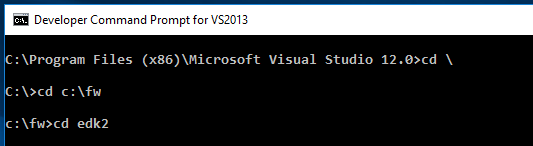
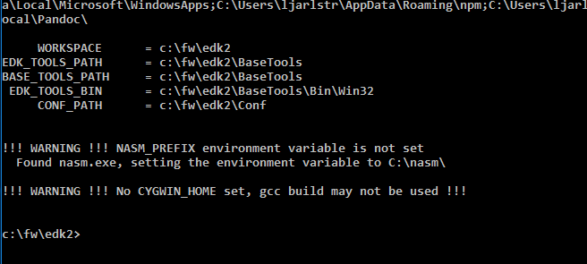
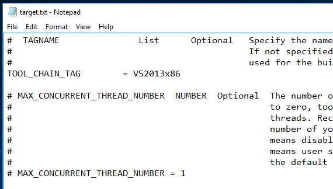
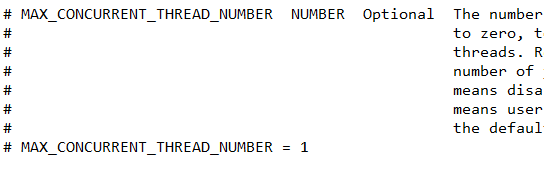

Lab Setup Windows
- Download the UEFI Training Materials .zip (accept any security notifications)
- Click “Open” and Unzip the file to C: which will take a few minutes
Note: It is highly important that you unzip the file correctly to this location because all the file locations in this training guide follow that format.C:\Fw\Presentations - separate zip file C:\Fw \Edk2 – Open source tianocore.org EDK II C:\Fw \DriverWizard – Install .MSI C:\Fw \LabSampleCode - Solutions for Labs C:\Fw \Documentation - .chm files and examples C:\Fw\Nasm – For Assembly compiler - Copy the C:\fw\NASM directory to C:

Pin Visual Studio Command Prompt for Windows
- Pin a Visual Studio Command Prompt for Windows 10
It will look similar to this “Visual Studio Command Prompt (201n)” in the Task bar
Note: this is the prompt that will be used to build the EDK II Labs
Preparing for the BUILD Command
Note: You’ll need to repeat this step each time you exit the Visual Studio Command Prompt window. It is recommended that you keep your command prompt open during the training Labs.
- Open Visual Studio Command Prompt
- Type
$ CD c:\fw\edk2and then Press “Enter”  - Type
$ Edksetupand then Press “Enter”
Note: If you see “!!! WARNING !!!...”, don’t be alarmed. The "No CYGWIN..." can be ignored at this time, BUT make sure "NASM" is found and theNASM_PREFIXis set toC:\nasm\
Configuring Build Tools
Note: You only need to edit Target.txt and/or Tools_Def.txt once after the first edksetup command after downloading the Training materials .zip file.
- Open Notepad or other text editor that supports UNICODE
- Open C:/fw/edk2/Conf/Target.txt
- Use the
Microsoft Windows and Visual Studio Matrix and then update
TOOL_CHAIN_TAGto match your version of Visual Studio - Modify TOOL_CHAIN_TAG to match your version of Visual Studio.

Example:
for Windows 10 64 bit OS and Visual Studio 2013 modify the following in Target.txt
From:
TOOL_CHAIN_TAG = MYTOOLS
to:
TOOL_CHAIN_TAG = VS2013x86
OPTIONAL: Update theMAX_CONCURRENT_THREAD_NUMBERBy the number of processors on your laptop + 1. Example: most have Intel® Dual Core with Hyper threading which means2 procs + 2 HT + 1 = 5.  - Save and close the text file C:/fw/edk2/conf/target.txt